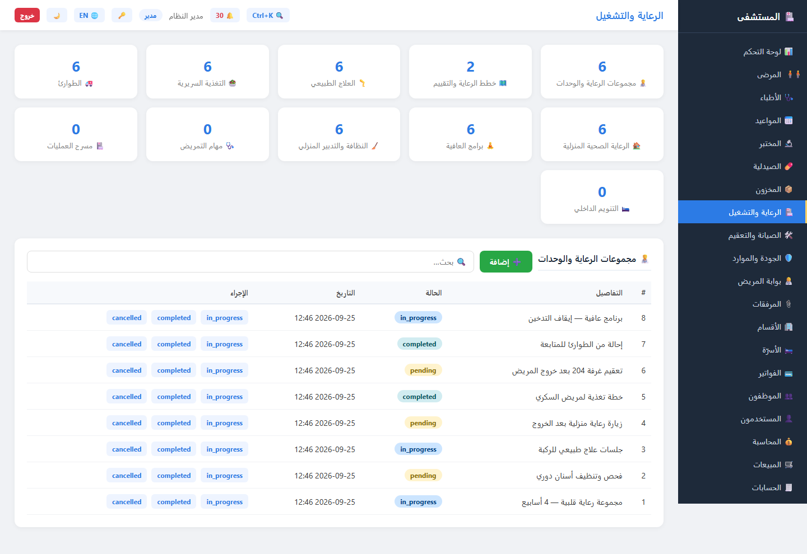
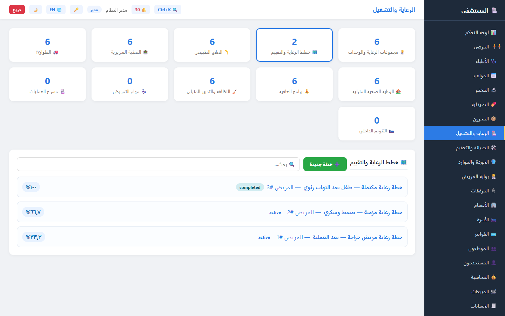
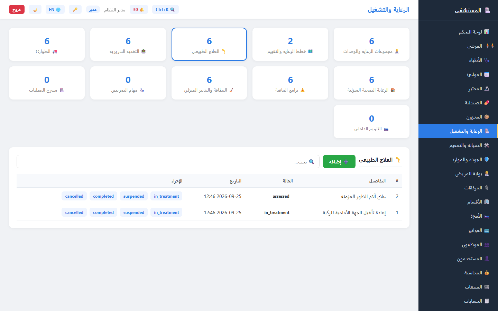
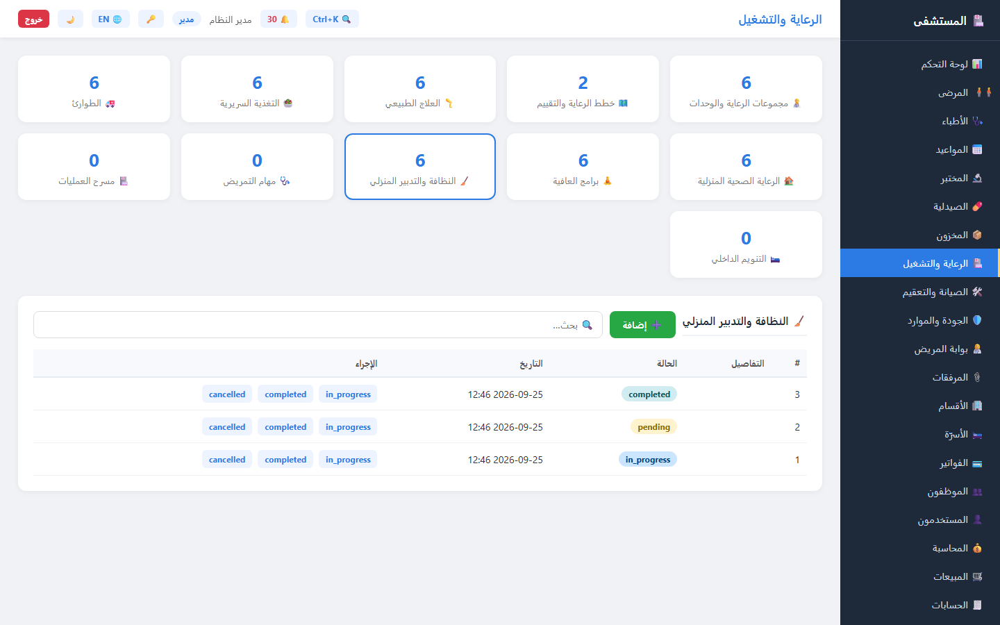
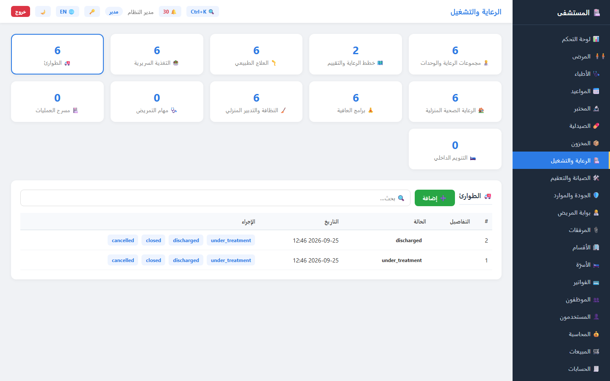
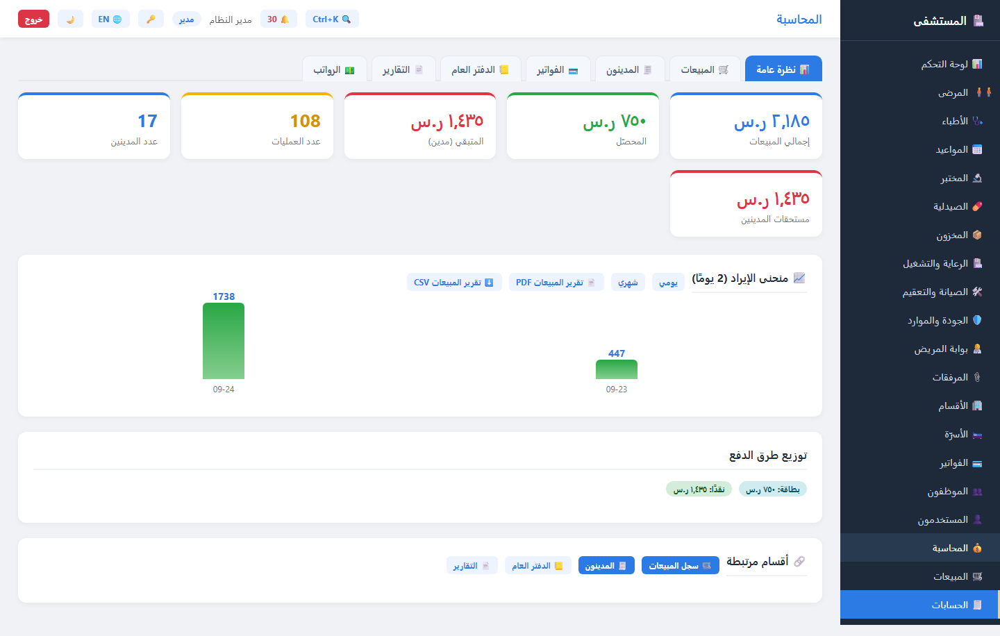

1 البداية: الوصول إلى الشاشة 🚀
الرعاية والتشغيلسجّل الدخول على / (الواجهة صارت على جذر الخادم مباشرة — بلا بادئة /ui)
ثم افتح «الرعاية والتشغيل» من الشريط الجانبي. أول ما يظهر:
- 🔢 عدّادات حيّة أعلى الشاشة من
GET /clinical/overview: طلبات معلّقة، خطط رعاية نشطة، مهام تمريض، عمليات مجدولة، تنويمات، بنوك دم، صيانة، تعقيم… (انقر أي بطاقة للانتقال إلى محاورها مباشرة). - 🧭 أحد عشر محورًا: مجموعات الرعاية، خطط الرعاية، العلاج الطبيعي، التغذية، الطوارئ، الرعاية المنزلية، العافية، النظافة، التمريض، المسرح، التنويم — ومحور «طلبات الخدمة» هو الافتراضي.
- ➕ زر إضافة على كل محور (للمدير/الطبيب) يفتح نموذجًا مبنيًا على حقول المحور نفسه، وبعده أزرار تعديل وحالة على كل صف.
2 طلبات الخدمة الموحدة 🧑⚕️
GET/POST /clinical/service-requestsواجهةنقطة واحدة تجمع كل طلبات الرعاية عبر أنواعها الثمانية، فتُقرأ من بطاقة واحدة بدل تشتّت الشاشات:
حالة الطلب تتحرّك على مسار واحد فقط:
- الحقول: المريض، النوع، العنوان، التفاصيل، الأولوية، موعد التنفيذ، المسؤول، النتيجة.
- حالة تلقائية عند الإكمال:
completed_atتُملأ تلقائيًا فيُصحّ التقرير الزمني. - الحالة السابقة غير المتاحة ⇒ 422 مع ذكر المسموح في الرسالة.

care_sets) قيد التنفيذ وزيارة منزلية مؤجَّلة — كلها قابلة للتنفيذ من الواجهة نفسها.3 خطط الرعاية والتقييم 🗺️
GET/POST /clinical/care-plansواجهةجديدخطة رعاية = عنوان + أهداف + بنود، وكل بند يُنفَّذ ويُوثّق بسجل تنفيذ مستقل
(التنفيذ لا يُلغى بعد إتمامه — قاعدة تفرّد على (item_id, executed_at)).
من الشاشة:
- بطاقة لكل خطة (وفق إجراءها، ومفتوحة تلقائيًا إن كانت واحدة) + شريط نسبة الإنجاز %.
- جدول البنود: الفئة، المسؤول، التعليمات، الحالة، آخر إجراء، وعدد التنفيذات.
- أزرار: «تسجيل تنفيذ» لكل بند مفتوح · «إكمال الخطة» (يرفض إن بقي بند غير منفَّذ) · «إلغاء الخطة» (يُلغي بنودها المفتوحة).
- حقل بحث فوري فوق البطاقات
filterCarePlans().
مسارات الحالة:

completion_percentage = منجز × 100 ÷ البنود
(صفر عند لا بنود) — فالبطاقة تعكس الحقيقة حتى لو فُتحت من متصفّح آخر.4 الوحدات التشغيلية الست 🦵🥗🚑🏠🧘🧹
/service-units/*واجهةكل وحدة جدول مستقل بمسار حالات خاص بها (التغيير عبر POST /…/status فقط —
الحقول الأخرى تُحدَّث بـ PUT):
| الوحدة | المسار | مسار الحالات |
|---|---|---|
| 🦵 العلاج الطبيعي | /service-units/physiotherapy | assessed → in_treatment → completed / cancelled |
| 🥗 التغذية السريرية | /service-units/nutrition | assessed → active → completed / suspended |
| 🚑 الطوارئ | /service-units/emergency | arrived → triaged → under_treatment → discharged / closed |
| 🏠 الرعاية المنزلية | /service-units/home-health | referred → scheduled → active → completed / cancelled |
| 🧘 برامج العافية | /service-units/wellness | planned → active → paused → completed / cancelled |
| 🧹 النظافة والتدبير | /service-units/housekeeping | pending → in_progress → completed / cancelled |
- الطوارئ تضيف الفرز (triage):
resuscitation · emergent · urgent · less_urgent · non_urgent · standardمع وقت الوصول والوجهة. - النظافة لا تحتاج مريضًا: رقم الغرفة + نوع المهمة + الأولوية
(
low · normal · high · critical) والمسؤول. - أي حالة خارج المسار ⇒ 422 تسرد المسموح بها بالضبط.



seed_demo.py (وظيفة
seed_units()) — آمنة التكرار: تتخطّى الجداول المملوءة فلا يُضاعف البذر
عند إعادة التشغيل.5 طب الأسنان 🦷
/dental/*مخطط + خطة + إجراءاتثلاث طبقات مترابطة:
- مخطط الأسنان
/dental/charts— حساسية ومريض مزمن وآخر فحص وملاحظات (لكل مريض سجل واحد يُحدَّث بالـ PUT). - خطة العلاج
/dental/plans— الشكوى الرئيسية + التشخيص + الطبيب + الحالة (active → completed / cancelled). - الإجراءات
POST /dental/plans/{id}/procedures— رقم السنّ، نوع الإجراء (root_canal · crown · filling · extraction …)، حالة (planned → performed)، المادة والتكلفة.
- التفرّد يمنع تكرار الجلسة نفسها:
(plan_id, tooth_number, procedure_type, performed_at)⇒ 409 عند المحاولة مرتين. - يُزرع مع البذر: مخطط أسنان + خطة علاج بأربعة إجراءات (حشوة، علاج عصب، تاج، خلع) —
فتظهر في
/dental/plansمن أول تشغيل. - النوع
dentalمتاح أيضًا كنوع طلب خدمة داخل «طلبات الخدمة» — لربط المخطط بمسار الرعاية الموحد.
6 شاشة المحاسبة: ستة تبويبات 💰
جديدواجهةقُسِّمت شاشة المحاسبة الكبيرة إلى ستة تبويبات، كل تبويب يجمع كل ما يرتبط به:
| التبويب | محتواه |
|---|---|
| 📊 نظرة عامة | الملخّص المالي الستّي + منحنى الإيراد (يومي/شهري) + توزيع طرق الدفع + أقسام مرتبطة |
| 🛒 المبيعات | فلاتر (فترة/طريقة/حالة/مريض/موظف) + سجل العمليات + التسديد والسدّاد الكل |
| 🧾 المدينون | كشف حساب المريض (طباعة/PDF) + ذمم المرضى بجدول وإجماليات |
| 🧾 الفواتير | قائمة الفواتير وحالاتها ودفعاتها |
| 📒 الدفتر العام | القيود ودليل الحسابات وميزان المراجعة وترحيل العمليات |
| 📄 التقارير | مبيعات PDF/CSV · كشف حساب مريض · الإحصائي · الرواتب · المختبر والصيدلية |
- 💵 الرواتب لم تعد تبويبًا هنا: صارت تبويبًا داخل 🗂️ شؤون الموظفين (كشف الرواتب · إضافة قيد · صرف · PDF/CSV)، ولم تبقَ لها قائمة جانبية مستقلة.
- اختصارات القائمة (المبيعات/الحسابات/الفواتير) تفتح الشاشة على تبويبها مباشرة، ورابط «المحاسبة» يبدأ من «نظرة عامة».
- التبديل بين التبويبات لا يعيد بناء الشاشة، والمحتوى يُرسم في حاوية معزولة ثم يُنقل — فلا يكتب تبويب متأخّر محتواه فوق الأحدث.
- التمرير بين التبويبات لا يفقد الفلاتر: حالة الفلاتر محفوظة في
ACC.

7 جداول API في سطور 🔌
| المسار | الوظيفة | الصلاحية |
|---|---|---|
GET /clinical/overview | عدّادات المحاور العشرة | مسجّل الدخول |
GET|POST /clinical/service-requests | قائمة/إنشاء طلب خدمة موحّد | الإنشاء: مدير/طبيب |
POST /clinical/service-requests/status/{id} | تبديل حالة الطلب | مدير/طبيب · 422 للحالة الخاطئة |
GET|POST /clinical/care-plans | خطط الرعاية وبنودها | الإنشاء: مدير/طبيب |
POST /clinical/care-plan-items/{id}/execute | تسجيل تنفيذ بند | خطة نشطة فقط · تكرار ⇒ 409 |
POST /clinical/care-plans/{id}/complete|cancel | إكمال/إلغاء خطة | بنود مفتوحة تمنع الإكمال |
GET|POST /service-units/<وحدة> | الوحدات الست | الحالة عبر …/status |
GET /dental/charts · /dental/plans | مخطط وخطط الأسنان | مسجّل الدخول |
POST /dental/plans/{id}/procedures | إضافة إجراء سنّ | مدير/طبيب · تفرّد الجلسة 409 |
Authorization: Bearer … (بلا توكن ⇒ 401)
· التوثيق الحيّ على /api/docs · جرّبها من هناك قبل كتابة أي كود.8 كيف تتحقق بنفسك 🎓
- 🧪
pytest— وحدات وتكامل (بما فيهاtest_advanced_modules.pyلخطط الرعاية والوحدات). - 🔍
python tests/stack_check.py— الفحص الموحد الحيّ (مؤشرات الواجهة + المسارات). - 🌐
npx playwright test— E2E ثلاثية المتصفحات (يتضمّنaccounting.spec.ts: خمسة اختبارات لتبويبات المحاسبة). - 📸
node scripts/capture-service-units-shots.js— إعادة التقاط لقطات هذه الجولة.
هذه الجولة نفسها مصدرها في المستودع:
docs/service-units-tour.html — عدّلها مع أي تغيير في هذه الشاشات.